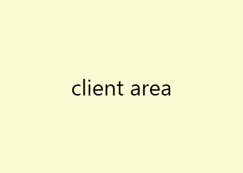

WPF customizing the appearance of a window in XAML
Introduction
This sample shows how to fully style a window in WPF in XAML alone whilst still providing all the default window functionality. It does so without having to resort to code behind or creating a custom window class derived from the Window class.
Description

In a WPF application the window itself outside the client area cannot be styled. The only option is to remove the default window completely by setting the Window properties WindowStyle and AllowsTransparency to None and True respectively.

This will result in a fully styleable client are but there will be a lot of work to get back to working window as all the standard elements have being removed:
- application icon
- minimize button
- maximize button
- close button
- title bar
- window border
Also the following functionality will no longer be available
- resizing on window edges
- resizing on window corners
- double click title bar window maximize
- double click title bar on maximized window return to normal size
- left click window icon shows system menu
- double click window icon closes window
- right click title bar shows system menu
- left click held on title bar allows the window to be dragged
- left click held on window borders allows horizontal or vertical resizing
- left click held on window corners allows horizontal and vertical resizing
To make this achievable in XAML 7 custom behaviors and commands are provided in the sample under ./StyleableWindow.
- ControlDoubleClickBehavior
- ShowSystemMenuBehavior
- WindowCloseCommand
- WindowDragBehavior
- WindowMaximizeCommand
- WindowMinimizeCommand
- WindowResizeBehavior
These are then used to help create a control template WindowTemplate (in App.xaml) that can be used to style be window. As an example the style below (also in App.xaml)
<Style x:Key="CustomWindow" TargetType="{x:Type Window}">
<Setter Property="WindowStyle" Value="None"/>
<Setter Property="AllowsTransparency" Value="True"/>
<Setter Property="MinWidth" Value="100"/>
<Setter Property="MinHeight" Value="46"/> <!--CaptionHeight + ResizeBorderThickness * 2-->
<Setter Property="Background" Value="Yellow"/>
<Setter Property="BorderBrush" Value="Green"/>
<Setter Property="BorderThickness" Value="5"/>
<Setter Property="Foreground" Value="DarkRed"/>
<Setter Property="Template" Value="{StaticResource WindowTemplate}"/>
</Style>
<Style x:Key="CustomWindow" TargetType="{x:Type Window}"> <Setter Property="WindowStyle" Value="None"/> <Setter Property="AllowsTransparency" Value="True"/> <Setter Property="MinWidth" Value="100"/> <Setter Property="MinHeight" Value="46"/> <!--CaptionHeight + ResizeBorderThickness * 2--> <Setter Property="Background" Value="Yellow"/> <Setter Property="BorderBrush" Value="Green"/> <Setter Property="BorderThickness" Value="5"/> <Setter Property="Foreground" Value="DarkRed"/> <Setter Property="Template" Value="{StaticResource WindowTemplate}"/> </Style>
when applied to the window..
<Window x:Class="WpfStylableWindow.MainWindow"
xmlns="http://schemas.microsoft.com/winfx/2006/xaml/presentation"
xmlns:x="http://schemas.microsoft.com/winfx/2006/xaml"
Title="MainWindow" Height="350" Width="525" Style="{StaticResource RedWindow}" x:Name="testw" Icon="App.ico" >
<Grid>
<TextBlock HorizontalAlignment="Center" VerticalAlignment="Center" FontSize="32">client area</TextBlock>
</Grid>
</Window>
<Window x:Class="WpfStylableWindow.MainWindow" xmlns="http://schemas.microsoft.com/winfx/2006/xaml/presentation" xmlns:x="http://schemas.microsoft.com/winfx/2006/xaml" Title="MainWindow" Height="350" Width="525" Style="{StaticResource RedWindow}" x:Name="testw" Icon="App.ico" > <Grid> <TextBlock HorizontalAlignment="Center" VerticalAlignment="Center" FontSize="32">client area</TextBlock> </Grid> </Window>
will produce the following window.

Please note this is deliberately horribly styled with the corner thumbs left visible, to show the different elements of the template.
Also note that where possible the template respects the Window properties (Background, BorderThickness, Foreground etc.), and will apply these if they are set explicitly on the Window.
For a slightly more realistic style try applying the RedWindow style to the MainWindow in the sample project and swapping out the existing brushes for the red window brushes in App.xaml.

Summary
The easiest way to understand the code is to step through it. There isn't really enough room here to go over the code behind the behaviors and commands in detail but if you have any questions or suggestions please feel free to leave them in the Q and A section.